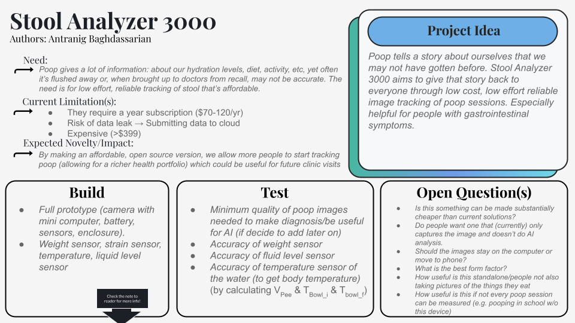

Stool Analyzer 3000
Ongoing: purchasing parts to begin the MVP.
Poop tells a story about ourselves that we may not have gotten before. I started Stool Analyzer 3000 in September 2026 to explore a low-cost, low-effort way to track stool images over time. The aim is to make it easier to keep a record that could help people notice patterns and bring more useful information to future clinic visits.

Current stage
Ongoing — parts are being bought now to start work on the minimum viable product (MVP). The first build will focus on capturing images and figuring out a practical hardware setup. AI analysis is a possible later direction, rather than a capability of the current project.
What I want to build
The planned MVP combines a camera, Bluetooth app, battery power, and a fingerprint sensor. It will sit on the rim of the toilet seat, with the camera looking down rather than up toward the user. That is the intended camera orientation, not a tested privacy guarantee.
The fingerprint sensor is intended to identify which person is using the device. The initial parts list includes a Seeed XIAO ESP32-S3 Sense and the fingerprint sensor; a battery and waterproof enclosure still need to be selected. I want to see how affordable and easy to use an image-tracking device can be.
The longer-term idea is that a consistent record might help someone discover a pattern they would otherwise miss. For now, the work is about building and evaluating the tracking prototype.
Parts so far
- Fingerprint Sensor — DFRobot SEN0542. Quantity: 1. Unit price: $24.90. Line total: $24.90.
- Seeed XIAO ESP32-S3 Sense — 113991115. Quantity: 1. Unit price: $13.90. Line total: $13.90.
Listed parts total: $38.80. These are the supplied planning prices, excluding shipping, tax, and additional components. Supplier links and a downloadable parts list are below. Purchasing is underway; delivery and assembly are not yet confirmed.
Questions I am working through
- What image quality is needed for a useful, consistent record?
- What form factor makes the device easy to use?
- Should images stay on the device or move to a phone, and how should privacy be handled?
- Is image capture alone useful before adding any automated analysis?
- How useful is the record when some sessions are missed or diet information is not recorded?
Weight, strain, temperature, and liquid-level sensors are also being considered. Their usefulness and accuracy still need testing; they are not confirmed features of the MVP.
Next steps
- Purchase the initial parts and bring up the camera/microcontroller hardware.
- Prototype the enclosure and image-capture setup.
- Test repeatability and image quality, then refine the design.
Current work is parts procurement only. I have not built or tested the MVP yet.
Parts and supplier links
Initial parts list supplied October 19, 2026. Total: $38.80 before shipping, tax, and additional parts.
Fingerprint Sensor — DFRobot SEN0542 · 1 × $24.90 ↗